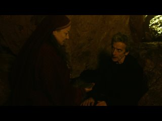
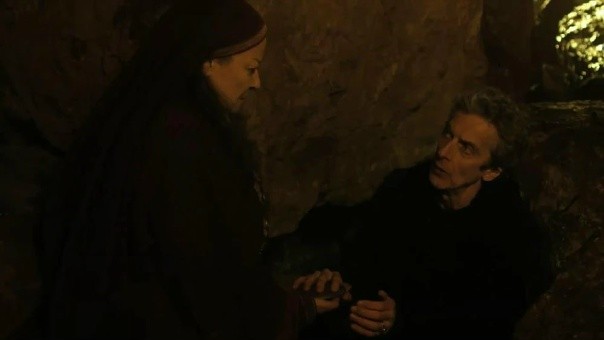

* MVO BaibaKo

Prologue
приквел к 9 сезону
11 сентября 2015
Формат: 2-минутный эпизод
| Варианты озвучек: | * MVO TVShows * MVO BaibaKo |
|---|---|
| Скачивание и просмотр: |
Сцена повествует о Докторе, который прилетел на Карн, и разговаривает с лидером Сестёр Карна, Охилой, которая ранее появлялась в мини-эпизоде «Ночь Доктора» (2013), о том, что кое-кто разыскивает его.
